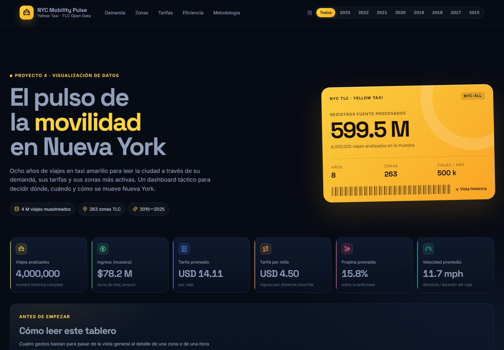

Dashboard táctico de movilidad urbana con datos abiertos de
NYC Yellow Taxi Trip Records
Documento de justificación de las actividades de análisis: audiencia, objetivos, preprocesamiento de datos, selección del tipo de dashboard y arquitectura de la solución.
Nueva York produce cientos de millones de viajes en taxi al año. Convertir ese volumen en decisiones requiere algo más que un tablero vistoso: exige definir quién lo va a leer, qué decisión habilita y cómo se limpian los datos antes de graficarlos. Este documento justifica esas decisiones.
El proyecto NYC Mobility Pulse construye un dashboard táctico sobre los registros de viajes de taxi amarillo publicados por la NYC Taxi & Limousine Commission (TLC). El tablero responde a tres preguntas: cuándo se mueve la ciudad, dónde se concentra la demanda y cuánto cuesta y qué tan eficiente es cada viaje. Para ello se procesaron 86,9 GB de archivos CSV correspondientes a ocho años (2015, 2017, 2018, 2019, 2020, 2021, 2022 y 2025), se aplicó un esquema de limpieza documentado y se extrajo una muestra reproducible de 500,000 viajes por año.
La solución combina una capa de datos reproducible (Python + DuckDB + Parquet), una capa analítica (agregados exportados a JSON) y una capa de presentación (React, Recharts y Leaflet) publicada como sitio estático en GitHub Pages. El resultado es un tablero que un gerente de operaciones puede leer en menos de un minuto y que un analista puede auditar hasta el registro original.
El taxi amarillo es uno de los termómetros más finos de la actividad urbana de Nueva York. Sus viajes registran hora, coordenadas o zona, distancia, duración, tarifa, propina y método de pago. Esa combinación permite observar fenómenos que otras fuentes no capturan con el mismo detalle: la caída de la demanda durante la pandemia, la recuperación del ocio nocturno, la presión de la congestión en horas pico o la dependencia del efectivo en determinados corredores.
Sin embargo, el dataset original no es un tablero: son archivos anuales de varios gigabytes, con esquemas que cambian entre años, fechas en formatos distintos, importes con separadores de miles y registros corruptos. Un analista sin un proceso definido tarda horas en llegar a la primera respuesta y corre el riesgo de comparar años que no son comparables.
El alcance se limita a los viajes en yellow taxi. No incluye Uber, Lyft, taxis verdes ni transporte público. Tampoco pretende explicar la demanda con variables externas (clima, eventos, precio del combustible): el objetivo es descriptivo y de seguimiento, no causal.
El dashboard tiene una audiencia primaria y tres secundarias. La diferencia entre ellas no es el nivel de interés, sino el nivel de detalle y la frecuencia de uso. El diseño prioriza la audiencia primaria y deja capas de exploración para las demás.
| Perfil | Decisiones que toma | Nivel de detalle | Frecuencia |
|---|---|---|---|
| Gerencia de operaciones y flota Audiencia primaria |
Asignar turnos y unidades, anticipar picos, decidir dónde posicionar flota y cómo ajustar tarifas o incentivos. | Alto: año, mes, día, hora y zona. Necesita comparar contra el año anterior y detectar desvíos. | Semanal / mensual |
| Analistas de movilidad Audiencia técnica |
Validar hipótesis, construir modelos de demanda, auditar la calidad de los datos y preparar reportes. | Muy alto: acceso a la muestra, diccionario de variables, reglas de limpieza y base DuckDB. | Bajo demanda |
| Planificación urbana Audiencia institucional |
Identificar corredores congestionados, zonas con baja cobertura y oportunidades de política pública. | Medio: mapas por zona y borough, rutas frecuentes, duración y velocidad. | Mensual / trimestral |
| Dirección y comunicación Audiencia ejecutiva |
Entender la tendencia general, comunicar resultados y decidir si se requiere una acción. | Bajo: KPIs, serie histórica y tres o cuatro hallazgos claros. | Mensual |
Tabla 1. Perfiles de audiencia, decisiones y nivel de detalle requerido.
Diseñar e implementar un dashboard táctico que permita monitorear y comparar la demanda, la geografía y la economía de los viajes en taxi amarillo de Nueva York entre 2015 y 2025, con una muestra reproducible y un proceso de limpieza documentado, para apoyar decisiones de capacidad, posicionamiento y precio.
¿Qué mes, día y hora concentran más viajes? ¿Cómo cambió la demanda respecto al año anterior? ¿Dónde se produjo la caída de 2020?
¿Qué zonas originan más viajes? ¿Qué boroughs concentran la actividad? ¿Qué rutas se repiten más y cuánto duran?
¿Cuánto cuesta un viaje típico? ¿Cuánto se paga por milla? ¿Qué método de pago deja más propina?
¿Cuánto tarda un viaje en hora pico frente a un valle? ¿La tarifa crece linealmente con la distancia? ¿Qué velocidad media tiene la ciudad?
La literatura distingue tres tipos de dashboard según su horizonte temporal y su audiencia. La elección no es estética: determina la frecuencia de actualización, el nivel de agregación y el tipo de decisión que habilita.
| Tipo | Propósito | Horizonte / actualización | Encaje con el proyecto |
|---|---|---|---|
| Operativo | Monitorear métricas en tiempo real para decisiones del día. | Minutos u horas; datos en vivo. | Parcial: el dataset es histórico y se publica por lotes; no hay feed en vivo. |
| Táctico | Analizar el rendimiento a medio plazo y apoyar decisiones gerenciales. | Semanas o meses; comparación entre periodos. | Alto: años completos, comparación interanual, zonas y tarifas. |
| Estratégico | Visión de largo plazo para la alta dirección. | Años; pocos indicadores muy agregados. | Parcial: el tablero tiene detalle operativo que excede una vista estratégica. |
Tabla 2. Comparación de tipos de dashboard y su encaje con el proyecto.
Esta elección también responde a la naturaleza de GitHub Pages: al ser un sitio estático, no hay consultas en vivo ni actualización minuto a minuto. Un dashboard operativo exigiría un backend y una base de datos expuesta; el enfoque táctico es coherente con la arquitectura elegida y con el uso real del dataset, que la TLC publica con rezago.
El conjunto proviene del portal de datos abiertos de la TLC. Cada archivo anual
contiene los viajes de taxi amarillo con columnas que evolucionaron con los
años: 2015 usa pickup_datetime y coordenadas; desde 2016 se
incorporan PULocationID y DOLocationID; en años
recientes se añaden recargos de congestión y tarifas aeroportuarias.
| Archivo | Tamaño | Registros fuente | Válidos | Muestra |
|---|---|---|---|---|
| 2015 | 26,89 GB | 146.087.462 | 142.426.581 (97,5%) | 500.000 |
| 2017 | 14,62 GB | 113.496.874 | 112.145.097 (98,8%) | 500.000 |
| 2018 | 14,47 GB | 112.234.626 | 110.766.890 (98,7%) | 500.000 |
| 2019 | 11,22 GB | 84.399.019 | 82.975.749 (98,3%) | 500.000 |
| 2020 | 3,32 GB | 24.648.499 | 24.066.597 (97,6%) | 500.000 |
| 2021 | 4,11 GB | 30.904.072 | 30.152.291 (97,6%) | 500.000 |
| 2022 | 5,45 GB | 39.656.098 | 38.637.317 (97,4%) | 500.000 |
| 2025 | 6,79 GB | 48.048.582 | 44.429.160 (92,5%) | 500.000 |
Tabla 3. Volumen por año, registros válidos tras la limpieza y muestra extraída.
Los años 2016, 2023 y 2024 no forman parte del conjunto entregado. El tablero los declara como huecos y no interpola valores: una línea que une 2022 con 2025 sin advertirlo sería una lectura engañosa.
| Variable | Tipo | Significado y uso |
|---|---|---|
pickup_datetime / tpep_pickup_datetime | fecha-hora | Inicio del viaje. Base para mes, día, hora y duración. |
dropoff_datetime / tpep_dropoff_datetime | fecha-hora | Fin del viaje. Permite calcular duración y detectar registros inválidos. |
trip_distance | decimal (mi) | Distancia recorrida. Se usa para tarifa por milla y velocidad. |
PULocationID, DOLocationID | entero | Zona TLC de origen y destino (1–265). Base del mapa y las rutas. |
pickup_latitude, pickup_longitude | decimal | Coordenadas disponibles en 2015; se usan para asignar zona por point-in-polygon. |
fare_amount | decimal (USD) | Tarifa base antes de impuestos y propina. |
tip_amount | decimal (USD) | Propina registrada; solo confiable en pagos electrónicos. |
total_amount | decimal (USD) | Monto total cobrado. Se usa para el ingreso agregado. |
payment_type | categórico | 1 tarjeta, 2 efectivo, 3 sin cargo, 4 disputa, 5 desconocido, 6 anulado. |
passenger_count | entero | Pasajeros declarados; se usa como control de calidad. |
Tabla 4. Diccionario de variables utilizadas en el dashboard.
El preprocesamiento se diseñó como un pipeline de cuatro etapas reproducible. Cada decisión se implementó en código y se registra en el reporte de calidad; no se hicieron ajustes manuales sobre los archivos.
Primero se inspeccionaron los encabezados y una muestra de filas de cada archivo. Se identificaron cuatro problemas estructurales:
VendorID, tpep_* y
PULocationID. Se construyó un esquema común con
COALESCE y detección de columnas por archivo.2015 Aug 18 08:31:49 AM
y 01/01/2019 12:46:40 AM. Se probaron formatos en cascada y se
validó que la fecha cayera dentro del año del archivo."-1,242.3" entre comillas. Se eliminó la coma antes de convertir
a DOUBLE con TRY_CAST para no romper el pipeline.| Regla | Criterio | Justificación |
|---|---|---|
| Fecha válida | Pickup y dropoff parseables; pickup dentro del año del archivo. | Evita mezclar años y descarta el año corrupto 2084. |
| Duración | Entre 1 minuto y 6 horas. | Elimina viajes de 0 s y registros con duraciones imposibles. |
| Distancia | Entre 0.1 y 100 millas. | Descarta distancias nulas y valores absurdos para la ciudad. |
| Importes | Tarifa entre 0 y 500 USD; total entre 0 y 1,500 USD; propina entre 0 y 300 USD. | Excluye reembolsos, disputas y errores de captura sin recortar viajes normales. |
| Pasajeros | Entre 0 y 8 cuando el dato existe. | El campo es opcional; se conserva el nulo, se descarta el imposible. |
| Zonas | PULocationID y DOLocationID entre 1 y 265. | El catálogo TLC tiene 263 zonas; los códigos fuera de rango son errores. |
| Coordenadas | Dentro de la caja NYC (lat 40.4–41.1, lon −74.3 a −73.6). | Solo aplica a 2015; descarta puntos fuera de la ciudad. |
Tabla 5. Reglas de limpieza y su justificación.
Se adoptó un criterio de descarte y no de imputación. La razón es conceptual: el dashboard describe viajes reales; reemplazar una tarifa extrema por la media inventaría un viaje que no ocurrió y distorsionaría la distribución. Los umbrales se fijaron con conocimiento del dominio (tarifas y distancias plausibles en NYC) y se validaron contra la distribución observada.
Para la visualización de la dispersión se aplicó un recorte adicional (distancia 0.2–25 mi, tarifa 2–90 USD, duración 2–120 min) para que la nube de puntos sea legible. Ese recorte es solo visual: los KPIs y las distribuciones se calculan con la muestra completa ya limpia.
La integración se resolvió con DuckDB, que permite leer CSV completos sin cargarlos en memoria y escribir Parquet columnar. El flujo es:
data/samples/*.parquet y se materializa la base
data/taxi_mobility.duckdb con las tablas
trips_sample, zones y quality.PULocationID.public/data/dashboard.json.
Esta separación permite que el sitio estático cargue en segundos y que
cualquier persona pueda reconstruir las cifras ejecutando los cuatro scripts
del directorio etl/.
El pipeline genera data/quality_report.json con el total de
registros, los válidos, los descartes por regla y el tiempo de procesamiento
por año. Ese reporte alimenta la tabla 3 y la sección de metodología del
dashboard. La muestra final contiene 4.000.000 viajes.
Cada visualización responde a una pregunta y habilita una decisión. No se incluyeron gráficos “decorativos”: si un elemento no cambia una lectura, se retiró.
| Indicador / visual | Definición | Pregunta que responde |
|---|---|---|
| Viajes analizados | Conteo de viajes de la muestra del periodo. | ¿Cuál es el volumen de actividad? |
| Ingreso total | Suma de total_amount. | ¿Cuánto dinero mueve la operación? |
| Tarifa promedio | Media de fare_amount. | ¿Cuánto cuesta un viaje típico? |
| Tarifa por milla | Σ fare / Σ distancia | ¿Cuánto se cobra por unidad de distancia? |
| Propina promedio | 100 × Σ tip / Σ fare | ¿Qué tan generoso es el pasajero? |
| Velocidad promedio | distancia / (duración / 60), filtrada 1–60 mph. | ¿Qué tan congestionada está la ciudad? |
| Serie mensual | Viajes por mes; barras del año y línea del año previo. | ¿Cómo evoluciona la demanda y cómo se compara con el año anterior? |
| Mapa de calor | Matriz 7 días × 24 horas. | ¿Cuándo se concentra la demanda dentro de la semana? |
| Coropleta de zonas | Viajes por zona TLC; métricas de origen, destino y tarifa. | ¿Dónde se origina y dónde termina la demanda? |
| Ranking de zonas | Top 10 por viajes de origen y participación. | ¿Qué zonas son críticas para la operación? |
| Histogramas | Distribución de tarifa y distancia por rangos. | ¿Cuál es la forma de la distribución y dónde está la masa? |
| Método de pago | Participación y propina media por tipo. | ¿Qué canal de pago deja más propina? |
| Boxplot | Cuartiles de duración por franja: pico, valle, fin de semana, madrugada. | ¿Cuánto penaliza la congestión al viaje? |
| Dispersión | Distancia vs. tarifa; color por método de pago; correlación. | ¿La tarifa crece con la distancia? ¿Hay valores atípicos? |
| Rutas | Top 10 pares origen–destino. | ¿Qué corredores requieren capacidad? |
Tabla 6. Indicadores, definición y pregunta de decisión.
La solución se organiza en tres capas. La primera es reproducible y vive en Python; la segunda es un contrato de datos en JSON; la tercera es la interfaz React publicada como sitio estático.
| Capa | Tecnología | Responsabilidad |
|---|---|---|
| Datos | Python 3.10, DuckDB, Parquet, Shapely | Lectura de CSV, limpieza, muestreo, join espacial y base de datos. |
| Agregados | SQL + JSON | KPIs, series, matriz horaria, zonas, histogramas, boxplot, dispersión y rutas. |
| Presentación | React 19, TypeScript, Vite, Recharts, Leaflet | Interfaz, filtros, tooltips, mapa interactivo y diseño responsive. |
| Despliegue | GitHub Actions + GitHub Pages | Build automático y publicación del sitio estático. |
Tabla 7. Capas de la arquitectura.
La base de datos elegida es DuckDB, una base analítica embebida. Se prefirió sobre PostgreSQL o MongoDB porque el proyecto es analítico, de solo lectura y de un solo equipo: DuckDB no requiere servidor, lee CSV y Parquet de forma nativa, y permite reproducir todo el pipeline en una laptop. La base resultante contiene 4 millones de viajes y el catálogo de zonas, y puede consultarse con SQL estándar.
El dashboard no consulta la base en vivo porque GitHub Pages no ejecuta
backend. En su lugar, el paso 04 exporta agregados a
public/data/dashboard.json. Es una decisión deliberada de
arquitectura: reduce el tiempo de carga, evita exponer credenciales y mantiene
el sitio gratuito y público. El costo es que los datos no se actualizan solos;
para actualizarlos se vuelve a ejecutar el pipeline y se hace commit del JSON.
Los siguientes hallazgos se obtuvieron con la muestra y se actualizan automáticamente al cambiar el año en el dashboard.

tip_amount solo es confiable en pagos electrónicos; en efectivo
suele registrarse como cero. Por eso el indicador se lee como “propina
declarada”, no como propina real.PULocationID; la zona se asigna por point-in-polygon. Los viajes
cuyos puntos caen fuera de los polígonos quedan sin zona y no entran en el
mapa, aunque sí en los KPIs generales.La Fase 1 permitió convertir un conjunto de archivos masivos y heterogéneos en una base de decisión coherente. El análisis de audiencia definió qué mostrar y en qué orden; los objetivos acotaron el alcance; el preprocesamiento garantizó que los años fueran comparables; y la elección de un dashboard táctico alineó la interfaz con el uso real del dataset y con las restricciones de un sitio estático.
El resultado es NYC Mobility Pulse: un tablero que permite pasar de la tendencia general a la zona específica en pocos clics, con un pipeline reproducible y una declaración explícita de sus límites. La siguiente fase puede profundizar en modelos de demanda, actualización automática de datos o integración con otras fuentes de movilidad.